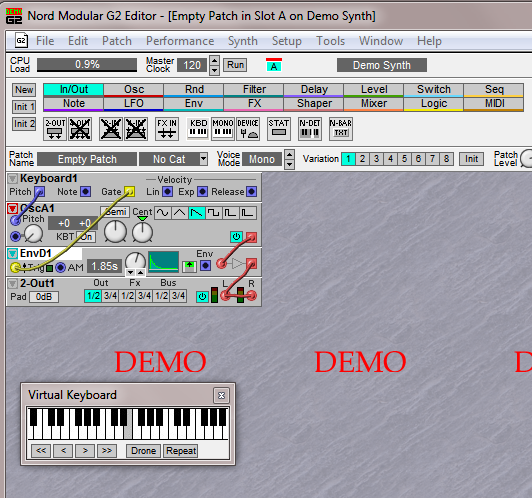

If Axo is so amateur, why are you wasting your time festering this forum with your drivel? I really can't fathom what you hope to gain slamming the design(ers) and users like this.


If Axo is so amateur, why are you wasting your time festering this forum with your drivel? I really can't fathom what you hope to gain slamming the design(ers) and users like this.
Yes, I guess that on the Clavia Modulars there is no compilation. The instantiation of the modules and the connections can be done on the fly. It is really impressive considering this was done 20 years ago with Motorola 56k DSPs !
What i really like with the Axoloti is that it is very reliable (if you don't go above 80% cpu, way more reliable than Clavia G2!) and has little latency (compared with VSTs), the programming model is a bliss for me. For the record, I had more digital artefacts on the G2 audio outputs than with the Axoloti.
Even so, I am quite worried about the future of the Axoloti as there is absolutely no communication from @johannes those times and no activity on github since december, i guess that he has a "main job" and priorities others than the Axoloti, like most of us... but i have no idea of what's going on. I hope he is doing well.
With this uncertainty, I am less eager to promote the Axoloti than I was one year ago and tell to friends "Yeah, come to the Axoloti, it is a great project with a great community".
Sure that's true, but i have no view on the future and thus it is difficult for me to tell synthesis enthusiasts to join the Axoloti community (and there is a lot of synth enthusiasts and designers in France !).
Nevertheless I will present some Axoloti based "synth toys" at the french Synthfest in Nantes (June) but without perspective i'm reluctant to make an Axoloti workshop (as I planned to do).
There is a monophonic demo that can run on a PC (as standalone) that is conform to what you have with a G2.
see the bottom of the web page
https://www.nordkeyboards.com/downloads/legacy/nord-modular-g2

@weasel79, says who?
If you have a problem with expressive language then that is your problem mate.
Plenty of people agree with my criticisms though perhaps they express them differently, I am Australian mate, we are born shitposters, it's just the way we speak.
Instead of attacking me personally why not try to accept and understand why it is the project has died hey?
i am with you on that. i am frustrated/worried as well, and as you i stopped "promoting" axoloti to other potential users, because i just don't know if it will continue to exist. i wrote @johannes a couple of PMs but never got an answer. it would be VERY appreciated if he could chime in and just make some statement. maybe he has lost interest, found a main job etc. but just tell people what is going on. maybe he is working on a major revamp of the whole thing, planned secretly on his home machine without GitHub?  (wishful thinking i guess) one way or the other, communication would be the key here...so @johannes, PLEASE let us know!!!
(wishful thinking i guess) one way or the other, communication would be the key here...so @johannes, PLEASE let us know!!!
I know australian people that can be expressive without being agressive.
The point is that the Axoloti project is almost a "single man army" project. If you were confronted with a big or medium company that sells costly genius synth and let you down, i would understand (for example Clavia that let down all the modular users, shame on them !).
Here, the situation is much different as the Axoloti is an open platform.
Even if @johannes let the Axoloti down there would be options to move on.
The fact that this is a "one man army" project and that it is open makes a big difference with the Clavia Modular case.
@SmashedTransistors, that's his choice, he's refused offers by other people to get involved.
You think I am being aggressive?
do you know what projection is snowflake?
You are being passive aggressive, and I know which of the two i prefer.
@strum, pleasae don't use the i'm Australian approach in your argument, that approach isn't fair to the rest of us from the land so far away from everything else down under...
I too would like to even just see a couple of words from @johannes, just to know everything is alright with our favourite open source project owner.. ! Hope nothing bad has happened !!.. 
It's clear that Strum, got frustrated, Axo is what it is, it wasn't what he wanted it to be. Thing is, it can be used effectively out ofthe box or it can be added to by the user like this Axo Line Level expander
The point is that guy saw something that he needed that wasn't there in Johannes design and he made it happen, he made it work. I messaged him on youtube and He even offered the schematic and shared what he'd done Line level Axo
I personally don't feel like I have contibuted alot to this community, but I get really excited and stimulated by the POSSIBLE when Isee what others have done bothin software and hardware.
As long as people are contributing and commenting on this then that's all useful. This guy Strum either didn't see that avenue or when he asked for help he either couldn't or wouldn't try to do it himself. I have no expectation on him or any other user to do something for Axo that I can use but I am sure as Hell glad when they do.
Because Axo is so openended people will always be going in different dirrections with it, and Johannes isn't communicating which is sad, but at a guess he thinks maybe most of his job is done by having put it out there in the first place, but....
TLDR
AXO is very useful and can do a lot of different things, it has limitations, and to overcome those you may have to do it yourself, and take on board what everyone else has very generously shared
Have to say that i still using my Axoloti and in different ways, like tookit and so on. It will be 4 years in June i guess. It is really educational. At the same time i have kyma paca with me and regarding "Live" mode on Axo i have to say that kyma is not better in this, you always have to plan before you do something, like on Axoloti. Kyma has this workflows separation too. Actually aside of stellar sound quality and capabilities kyma really impenetrable sometimes for me because of it's smalltalk-rooted paradigm that im trying to integrate into my headspace. It sometimes feels like i have to turn my brains inside out. Though i don't want to give up. And also excited with Axoloti2 news.
Btw Axoloti inspired me to draw this inner sleeve for my 2xLP. It is like "what if there was some cyrilic dsp environment in USSR"
Yes, Nord modulars no compiling is needed, they are "live" all the time.
I got a G2 and used to have a G1.
G2 is super great, but also got its limits. No sampling and so on, but overall it is a pretty cool machine.
But comparing Axoloti to G2, Axoloti is a lot more flexible, but G2 sounds better. So there are trade offs, no matter which one of them you get.
Well since you asked, I'm afraid things have taken a very nasty turn for me, forcing my business plans to be completely halted. It's so bad I don't even know if I own my own possessions anymore, haven't even seen my Axoloti in nearly eight months now, nevermind developed anything with it.
Forgive me, late to the party. Haven't read the whole thread yet (some may already have pointed out what I am going to point out). I just wanted to chime in on this post and the ideas/options suggested. Having thought the very same thing regarding Axoloti. These ideas may sound feasible and perhaps even financially possible. There are still some issues regarding unpopulation/population and addition of breakout boards that some people may forget.
First, and I seem to recall that Johannes even pointed this out. Axoloti is possible to use right out of its box, customer doesn't need to source and assemble components to be able to even get any sound out of it at the start. However care has been taken to make sure that there is a balance of features, boardsize, price and user-friendliness. Decisions made wrong in that = scares potential customers away (not good in the startup phase).
As soon as there is something added. Regardless of it being SW or HW. You'll get an exponential growing multiplication factor of potential (unwanted) support case/forum post possibly because of each and any addition.
As an former employee (Elektron/production department) with total transparency into support issues/cases. I've seen this at every Elektron release (SW/HW). You wouldn't believe the level of competence revealed in support cases. Some customers are extremely technical geeks, some are... erhm... not. Everyone wants to make music/sound/whatever but somehow failed for whatever reason, hence asking for support. And each support case is someones work to address. Consumes time like a black hole consumes... well... everything. Sometimes some support cases reveals underlying OS bugs that are so sneaky that they probably wouldn't have been found if it weren't for that customers particular case. Those cases could even halt production/development. And those were 'closed' products.
Going the route of the Axoloti board has some of the same potential pitfalls. Aside of it being a product, with regulations that any/every manufacturer must follow (warranty, safety etc). Having an 'open' product that customers can (and are encouraged to) modify in some (if not all) aspects. Is a wormhole, a warphole and a black hole in unity. However, it is also a bit of touching singularity when it comes too support and keeping such a product stable.
Providing breakout boards opens up an other dimension of support/forum cases regarding errors, interferencies and instabilities with each other and/or the main board. When customers are unable to solve the issue themselves they naturally reach out to whereever they can. Hence support cases, or worse (if you are a manufacturer): warranty issues. Splitting up a system into parts, that are (in the customers eyes) still supposed to function as good as any single entity. Is like asking for problems to add (beside those already existing).
Providing a modular system of parts as such often leads to either of two ways:
Unless being rich wanting to spend money with no returns expected. There are not many (if any) manufacturers trying to run their business as number 2 (high volume/low price) while providing number 1 (small niche/modular).
By trying to convert number 1 into number 2. One would need to start with as high volume as possible of each/every part (lower price for manufacturer). But to be 'sure' that anyone/everyone will purchase (not just because of the price), it has to appeal to as many as possible (generic product). It is a catch 22.
Releasing the Axoloti was very bold of Johannes since it is both SW and HW. Could he have done things differently. Probably. But no matter of what he had done differently (or not). There would have been something else that customers asked/wishing for. Again: catch 22.
Read the whole thread now. Seems that the Axoloti is touching onto something at everyone since it can get so heated in the discussions.
No matter what. Sorry to hear about you struggles @axoman. I really hope that you'll sort it out in the best way possible! Good luck.
hey man reading your opinions and about your backrgound, i think you might be a good contributor to the slightly updated version of the axo core board that is currently being developed by @urklang:
there's also a discord server now and i think axxoloti in general can use any engagegment possible..
Hey, no worries @miketheman, threads often get a bit too lengthy to read on the spot, you should see the size of my 'Analogue Versus Digital' thread, you'd need some serious determination to get through that one, but the cool, cheeky thing about that one is that those who fail to read before replying will be unaware that they already got owned by axoman (oh yes they did) 
What I'm really saying is don't take the arguments on here too seriously, certainly not in my case, cause believe it or not, I wish Strum the very best of luck. The way I see the situation is that it's them against us, and by "them", I mean the big synth brands versus us, the small guys.
I'm just proud, and admittedly at times perhaps over-passionate about the fact that we live in a time where we, the little guys, can finally put our big finger up to the big guys and say, you know what, you either start producing what the customer actually wants, or else we'll do it ourselves and take the crown.
Or in other words, despite the occasional heated debates and disagreements, I personally am always proud to be firmly on the side of the groovy gang, that being anyone and everyone who has it in them, the desire to produce something better than what we're offered by the big guys, and those who produce the hardware and software that make it possible for us to even do that.
This place is definitely where the groovy gang hang out!

{kind=link}